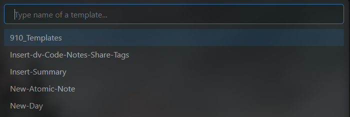
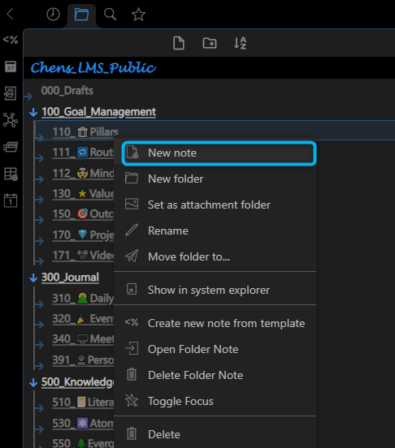

6种创建新笔记的方法
6 ways to create new notes
根据笔记类型，有多种添加新笔记的方法：
- 使用快捷键
Ctrl + N或New Note按钮 - 使用快捷键
Alt + N1 - 使用快捷键
Ctrl + Q1 4 - 使用仪表盘或笔记上的按钮 1 2 3
- 右键单击笔记文件夹 1
- 单击日历面板上的日期或星期 3
使用快捷键 Ctrl + N 或 New Note 按钮
Use shortcut Ctrl + N or New Note Button
使用场景：快速添加一个临时笔记，事后再定义笔记类型。
- 通过按快捷键“Ctrl + N”或File explorer面板上的
New Note按钮创建一个空笔记

- 更改文件名，开始记录
- 之后：按快捷键
Alt + T插入模板 - 之后：将笔记移动到笔记类型的对应文件夹（例如支柱笔记存放在“110_🏛Pillars”中）
使用快捷键Alt + N
Use shortcut Alt + N
使用场景：为某种笔记类型快速添加笔记。
- 通过按快捷键
Alt + N从模板创建新笔记
 - 更改文件名
- 之后：根据笔记类型将笔记移动到对应的文件夹中
使用快捷键 Ctrl + Q
Use shortcut Ctrl + Q
使用场景：为特定笔记类型快速添加笔记，同时插入链接
- 按快捷键
Ctrl + Q并选择笔记类型


- 输入笔记标题


使用仪表板上的按钮
Use buttons on the dashboards
使用场景：为特定笔记类型添加笔记，之后无需移动笔记
- 打开仪表板注释（例如目标管理仪表板）
- 点击它上面的按钮
- 一个新笔记被创建在对应的文件夹中
- 更改文件名

右击笔记文件夹
Right-click the note folder
使用场景：为特定笔记类型添加笔记，之后无需移动笔记
- 展开左侧边栏并激活 File explorer 面板（如果还没有）
- 导航到笔记文件夹
- 右键单击笔记文件夹并使用上下文菜单创建一个new note
- 更改文件名

单击日历面板上的日期或星期
Click on the day or week on the Calendar pane
- 展开右侧边栏并激活 calendar 面板（如果还没有）
- 单击日期或星期以创建新笔记